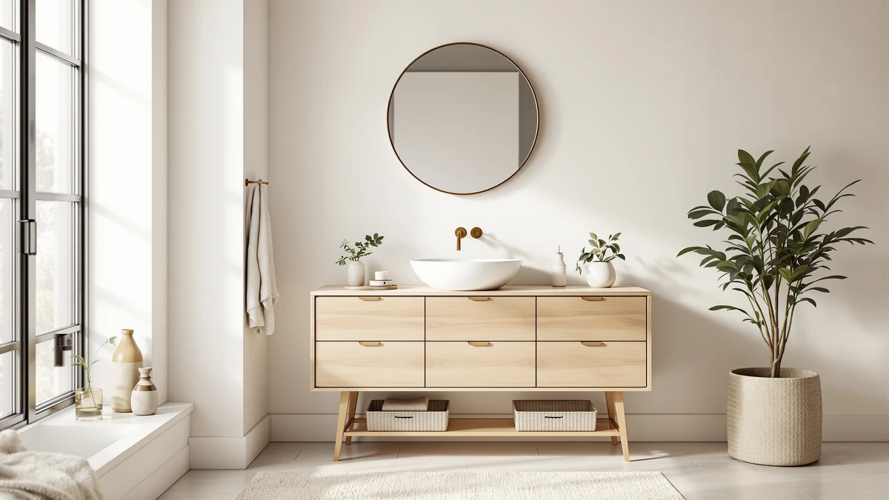

Quick Answer
If you're looking for a hcioan sink base cabinet review before you buy, here's the short version: the HCIOAN Sink Base Cabinet RTA is a 36-inch MDF cabinet that ships flat and assembles without special tools, and it's sold without a sink or countertop. At $419.99 it sits in the same price range as several 36-to-48-inch alternatives that include an integrated sink, so your decision mostly comes down to size and whether you want the basin bundled in.
Our pick: HCIOAN Sink Base Cabinet RTA — $419.99 Check Price on Amazon
Bottom line: our top pick is the HCIOAN Sink Base Cabinet RTA at $419.99.
Things to Know Before You Buy
- The HCIOAN Sink Base Cabinet RTA ships as a ready-to-assemble kit, not a pre-built cabinet, so budget time for assembly before installation.
- At 36 inches wide and 24 inches deep, it fits standard single-sink vanity layouts but won't suit openings wider than about 40 inches.
- The cabinet is sold without a sink or countertop, unlike the St.Mandyu and CITTANEO alternatives below, which include an integrated basin.
- MDF construction keeps the price competitive but makes sealing the base and sink cutout against moisture more important than it is with solid wood cabinets.
- Pricing across all four cabinets in this review sits within about $11 of each other, so the real decision is size and sink inclusion, not budget.
This hcioan sink base cabinet review compares the HCIOAN Sink Base Cabinet RTA against three other vanity cabinets on price, construction and what verified Amazon buyers report about living with each one in their own bathrooms.
We researched spec sheets, current Amazon pricing and patterns across verified owner reviews rather than installing any of these cabinets ourselves. Of the four options covered here, the HCIOAN Sink Base Cabinet RTA is the pick for buyers who want a basic, 36-inch sink base they can pair with their own basin and countertop, while the St.Mandyu, CITTANEO and the double-sink option covered later make more sense if you want the sink built in from the start.
None of these four cabinets differ much on price. All four fall within an $11 range, so the practical questions are width, depth and whether the sink comes included. A single-sink household replacing one damaged cabinet has different needs than a household sharing one bathroom with two people getting ready at once, and that distinction drives most of the recommendations in this hcioan sink base cabinet review.
Why You Should Trust Us
Ilane Tall researches bathroom fixtures and storage for Best Bathroom Vanities. She tracks pricing shifts and reads through verified owner reviews across dozens of vanity and cabinet listings each month. This hcioan sink base cabinet review draws on the manufacturer's published specs, the current Amazon listing details and recurring themes in verified buyer feedback, since we are a research-based review site rather than a physical product lab. Every price and dimension cited here comes directly from the product listing or manufacturer spec sheet, and we flag anywhere a rating or review count simply isn't available instead of guessing at one.
How We Compared
Rather than purchasing and installing these cabinets, we built this hcioan sink base cabinet review around three sources: the manufacturer specs listed on each product page, current Amazon pricing pulled at the time of writing, and the patterns that show up across verified owner reviews. We cross-checked dimensions and materials across the listing details for the HCIOAN, St.Mandyu, CITTANEO and double-sink cabinets, and we noted anywhere a rating or review count was not available rather than inventing one. We excluded a handful of similarly priced cabinets that lacked clear dimension listings or had inconsistent material descriptions across retailers.
We weighted width and depth first, since a cabinet that's an inch too wide for an opening is a dealbreaker regardless of price. From there we compared whether the sink comes included, the stated material, and the gap between the listed price and anything similar on the market. We skipped any cabinet where the seller's own listing contradicted itself on dimensions or materials, on the view that inconsistent specs are a bigger red flag than a missing rating.
Overview & Specs

HCIOAN Sink Base Cabinet RTA
What we like
- 36-inch width fits standard single-sink vanity openings without modification
- Ships flat, which simplifies moving it through narrow hallways and doorways
- Priced at $419.99, in line with cabinets that include a sink
Flaws but not dealbreakers
- Sold as a cabinet only, so the sink and countertop are separate purchases
- MDF construction needs careful sealing at the base to resist moisture over time
- No published rating or review count was available at the time of writing
| Material | MDF / engineered wood |
| Size | 36"W x 24"D x 34.5"H |
The HCIOAN Sink Base Cabinet RTA measures 36 inches wide, 24 inches deep and 34.5 inches tall, a footprint that lines up with most standard single-sink vanity openings. It arrives as a ready-to-assemble kit rather than a finished piece, built from MDF panels rather than solid wood or plywood. That construction choice is a big part of why it holds a $419.99 price tag that matches or undercuts several cabinets in this hcioan sink base cabinet review that include a sink as part of the package.
Because the cabinet ships without a sink or countertop, you'll need to budget separately for a basin and top, and factor in the cutouts your plumbing requires. The flat-pack format makes it easier to move through narrow hallways and doorways than a pre-assembled vanity would, though it also means setting aside time for assembly before you can install it. For a bathroom where you already have a sink and countertop you like, or you're replacing a damaged base cabinet without rebuilding the whole vanity, the HCIOAN gives you a correctly sized shell at a competitive price.
What We Liked
The HCIOAN's biggest strength in this review is how closely its dimensions match a standard single-sink vanity opening. At 36 inches wide, it slots into the same footprint used across most bathroom remodels, so you're not stuck custom-fitting trim or extending a countertop to cover a gap. A flat-pack cabinet also moves through doorways and stairwells more easily than an assembled one, and the $419.99 price holds up well against vanities with a sink built in, because you're effectively paying cabinet-only money for cabinet-only parts.
What Could Be Better
The biggest tradeoff with the HCIOAN Sink Base Cabinet RTA is what it doesn't include: no sink, no countertop, and no hardware beyond the cabinet shell itself. That adds a second and third purchase to your budget, and it means matching finishes separately rather than buying a single coordinated vanity set like the St.Mandyu or CITTANEO. MDF also doesn't handle standing water as well as solid wood or plywood, so a tight seal around the sink cutout and baseboard matters more here than it would with a pricier cabinet. Because no rating or review count appears on the current listing, you're relying on spec sheets and pricing rather than a track record of verified buyer feedback, which is a fair reason to compare it against the alternatives below before deciding.
Who Is It For?
The HCIOAN fits buyers who already own a sink and countertop they want to reuse, or who are replacing a water-damaged or dated base cabinet without redoing the whole vanity. It also works for anyone renovating on a tighter timeline who can assemble a flat-pack cabinet rather than waiting on a fully built unit. If you'd rather buy one cabinet and have the sink included, the St.Mandyu, CITTANEO or double-sink option covered next in this hcioan sink base cabinet review are a better starting point, since all three bundle the basin with the cabinet.
It's a reasonable fit, too, for a rental property or a flip where keeping costs predictable matters more than matching a specific finish, since the shell can take whatever countertop and basin the owner already has on hand. Anyone who wants a single coordinated vanity set out of the box, with the sink, cabinet and finish decided for them, will get there faster with one of the three alternatives below.
Alternatives to Consider
If the cabinet-only format of the HCIOAN isn't what you need, these three alternatives bundle a sink with the vanity and cover a range of sizes and price points.

Also Great
St.Mandyu 48" Bathroom Vanity w/Sink
At 48 inches wide with the sink included, the St.Mandyu suits larger bathrooms that need more counter space than the HCIOAN's 36-inch footprint, at the same $419.99 price. Because the basin ships attached to the cabinet, you skip the separate sink purchase and the extra plumbing math that comes with a cabinet-only option, which makes it a more complete package for anyone starting a bathroom from scratch rather than replacing one worn-out base.
$419.99
Check Price on Amazon
Best Value
CITTANEO 36" Bathroom Vanity with
The CITTANEO matches the HCIOAN's 36-inch width at a slightly lower $414.99. That makes it the better pick if you want a complete vanity rather than a cabinet you still need to pair with a sink. For the same footprint as the HCIOAN and a few dollars less, you get a finished vanity rather than a shell, which is why it carries the Best Value badge in this comparison rather than the HCIOAN itself.
$414.99
Check Price on Amazon
Premium Choice
Double Bathroom Vanity with Sink
For shared bathrooms, this double-sink vanity costs $425.95, only about $6 more than the HCIOAN, and gives two people their own basin instead of one shared sink. That small premium buys two full sink stations instead of the single cabinet shell the HCIOAN provides, which is a better trade for households getting ready at the same time each morning.
$425.95
Check Price on AmazonFrequently Asked Questions
Does the HCIOAN Sink Base Cabinet RTA include a sink?
No. The HCIOAN Sink Base Cabinet RTA is a cabinet shell only, so you need to buy a sink basin and countertop separately. If you want a vanity with the sink already included, the St.Mandyu, CITTANEO and double-sink options covered in this hcioan sink base cabinet review all bundle a basin with the cabinet.
What size bathroom does the HCIOAN cabinet fit?
At 36 inches wide, 24 inches deep and 34.5 inches tall, it is sized for a standard single-sink vanity opening. If your bathroom needs a wider vanity, the 48-inch St.Mandyu or the double-sink option cover more counter space.
Is MDF a good material for a bathroom sink cabinet?
MDF keeps the price down and holds up fine in a bathroom as long as the seams around the sink cutout and the base are properly sealed against standing water. Solid wood or plywood cabinets resist moisture better over time, but they typically cost more than the $419.99 the HCIOAN is priced at.
Final Verdict
The short answer to this hcioan sink base cabinet review is that the HCIOAN Sink Base Cabinet RTA earns its spot for buyers who already have a sink and countertop and just need a correctly sized, 36-inch base cabinet at a fair price. If you'd rather buy the sink and cabinet together, the CITTANEO is the better value at $414.99, the St.Mandyu makes sense if you need the extra width of a 48-inch vanity, and the double-sink option is worth the small premium in a shared bathroom. For a straightforward cabinet swap, HCIOAN remains the pick to start with.